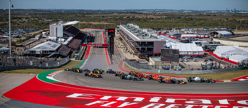

UNITES STATES GRAND PRIX
Cicuit Length:
5.513 km (3.426 mi)
Turns:
20
Number of Laps:
56
First Grand Prix:
2012
Race Distance:
308.405 km
United States's race takes place in Texas. texas is a state in the USA,
about 29 Million people live in Texas. And across Italy live about 328,2 Million inhabitants. So far the record holder of this circuit is Charles Lecerc.
This year (2021) the race will be on October 24. The fastest speed last year (2019) was measured at 264 km/h.
The most wins on this track are Scuderia Ferarri, in total they've won 10 times on this track. And the driver with the most wins on this track is Lewis Hamilton with 6 wins to his name.

Winners of the United States GP
2020 - Canceled due to Corona
2019 - Valteri Bottas
2018 - Kimi Räikkönen
2017 - Lewis Hamilton
2016 - Lewis Hamilton
2015 - Lewis Hamilton
2014 - Lewis Hamilton
2013 - Sebastian Vettel
2012 - Lewis Hamilton
2011 - Not Held
2010 - Not Held
2009 - Not Held
2008 - Not Held
2007 - Not Held
Want to see the track? Click on play!